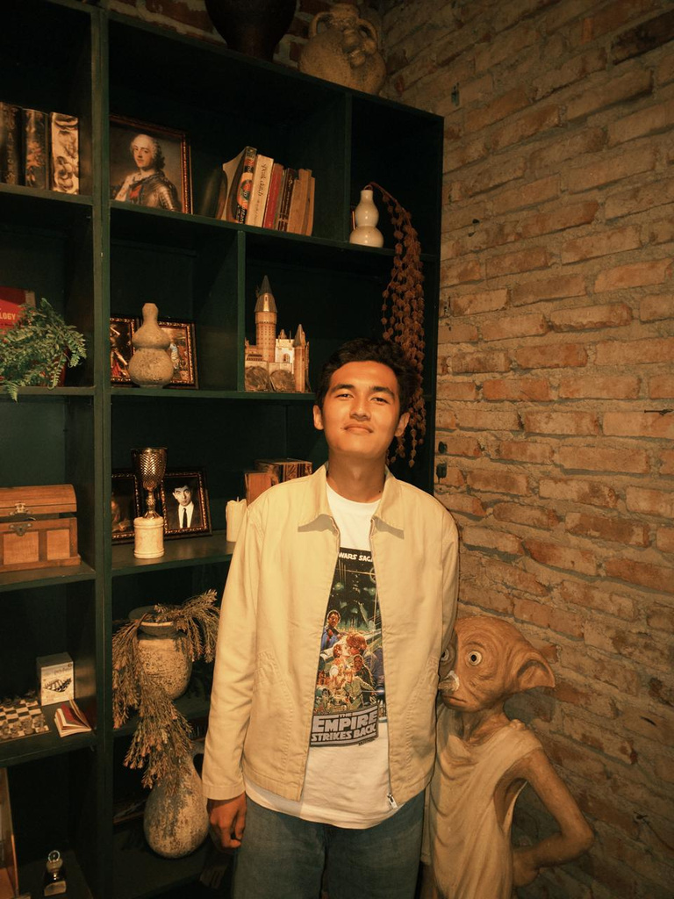

AI & Machine Learning
TensorFlow · Keras · Scikit-learn
Transfer Learning · Model Evaluation
Hi, I’m Rizki Tazidi Zayd.
Turning curiosity into practical solutions through artificial intelligence, computer vision, and application development.

01 / THE PERSON BEHIND THE CODEInstitut Teknologi Nasional Bandung
GPA 3.79 / 4.00I’m Rizki, an Informatics graduate from ITENAS with a focus on artificial intelligence, computer vision, and applications powered by machine learning and deep learning.
From plant species classification to geographic information systems, I enjoy understanding problems, experimenting with solutions, and turning ideas into usable applications.
My experience at BRIN, in teaching labs, and in student organizations has taught me to collaborate and make complex ideas easier to understand. I’m always open to exploring new technologies and fields.
View resume ↗From research to implementation.
Explore each project and the process behind it.
Showing 5 projects
Always learning, experimenting,
and growing.
TensorFlow · Keras · Scikit-learn
Transfer Learning · Model Evaluation
OpenCV · MobileNetV3 · YOLOv8
Image Processing · TensorFlow Lite
Laravel · Leaflet · API
PHP · JavaScript
Flutter · Dart · Android
TensorFlow Lite Integration
Python · Java · C++ · Git · GitHub
MySQL · PostgreSQL · Firebase · Docker · AWS
Ready to learn, contribute, and turn challenges into meaningful solutions.